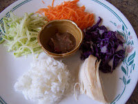

ข้าวยำปักษ์ใต้ เป็นอาหารที่เชื่อว่าทุกคนต้องเคยลิ้มลองกันมาบ้างแล้ว เพราะเป็นอาหารที่ขึ้นชื่อของชาวใต้จนดูเหมือนจะกลายเป็นสัญลักษณ์อาหารปักษ์ใต้อีกเมนูหนึ่ง
ข้าวยำของชาวใต้ จะอร่อยหรือไม่ก็ขึ้นอยู่กับน้ำบูดูเป็นสำคัญ น้ำบูดูมีรสเค็ม แหล่งที่มีการทำน้ำบูดูมากคือจังหวัดยะลาและปัตตานี เวลานำมาใส่ข้าวยำต้องเอาน้ำบูดูมาปรุงรสก่อน จะออกรสหวานเล็กน้อยแล้วแต่ความชอบ น้ำบูดูของชาวใต้มีกลิ่นคาวของปลา เพราะทำมาจากปลา กลิ่นคล้ายของทางภาคอีสาน แต่กลิ่นน้ำบูดูจะรุนแรงน้อยกว่า เนื่องจากน้ำบูดูมีรสเค็ม ชาวใต้จึงนำมาใส่อาหารแทนน้ำปลา
ข้าวสวย 60 กรัม หรือ 1/2 ถ้วย
กุ้งแห้งป่น 45 กรัม หรือ 3 ช้อนโต๊ะ
มะพร้าวหั่นฝอย คั่วจนเหลืองกรอบ 45 กรัม หรือ 3 ช้อนโต๊ะ
พริกขี้หนูคั่วป่น 15 กรัม หรือ 2 ช้อนชา
ผักถั่วงอกเด็ดหาง 25 กรัม หรือ 1/3 ถ้วย
ตะไคร้หั่นฝอย 30 กรัม หรือ 2 ช้อนโต๊ะ
ใบมะกรูดอ่อนหั่นฝอย 15 กรัม หรือ 1 ช้อนโต๊ะ
มะม่วงดิบสับหั่นเส้นเล็ก 30 กรัม หรือ 2 ช้อนโต๊ะ
ถั่วฝักยาวหั่นฝอย 45 กรัม หรือ 3 ช้อนโต๊ะ
มะนาว 1 ลูก
น้ำบูดู 45 กรัม หรือ 3 ช้อนโต๊ะ
น้ำ 1 ถ้วยครึ่ง
ปลาอินทรีย์เค็ม 10 กรัม หรือ 1 ชิ้น
น้ำตาลปี๊บ 120 กรัม หรือ 1 ถ้วย
หอมแดงทุบพอแตก 300 กรัม
ตะไคร้หั่นท่อนสั้น 40 กรัม หรือ 1 ต้น
ใบมะกรูดฉีก 7 กรัม หรือ 3 ใบ
ข่ายาว 1 นิ้ว
ทุบพอแตก 5 กรัม หรือ 1 ชิ้น
1. ทำน้ำบูดูโดยการต้มปลาอินทรีย์จนเปื่อย แกะเอาแต่เนื้อใส่หม้อ เติมน้ำบูดู น้ำ แล้วตั้งไฟ
2. ใส่หอม ตะไคร้ ข่า ใบมะกรูดฉีก น้ำตาลปี๊บ ต้มต่อจนน้ำบูดูข้น ชิมให้รสเค็มนำหวาน ยกลง
3. จัดเสริ์ฟโดยตักข้าวใส่จาน ใส่มะพร้าวคั่ว กุ้งแห้งป่น และผักทั้งหมดใส่อย่างละน้อย พอคลุกรวมกันแล้วจะมากยิ่งขึ้น ราดน้ำบูดู ปรุงรสด้วยน้ำมะนาว เคล้าให้เข้ากันดีรับประทานได้
ข้าวยำปักษ์ใต้ที่ปรุงสำเร็จแล้วจะออกรสหลายรสด้วยกัน ได้แก่ รสมันของมะพร้าว รสเปรี้ยวจากมะม่วงดิบและน้ำมะนาว รสเค็มหวานจากน้ำบูดู รสเผ็ดของพริกป่น เรียกว่าเป็นอาหารที่บำรุงธาตุก็ไม่ผิดนัก